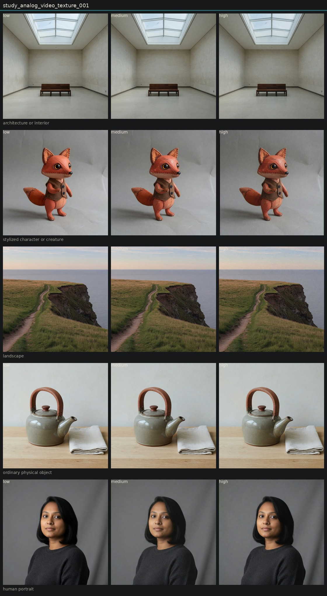

Controlled variation of analog video texture
Hold subject via locked anchor images. image_edit each anchor to low, medium, and high of one candidate. Do not change other dimensions on purpose.
High lays a scan-like grain field while subject edges stay. Portrait and gallery isolate it. Fox high added letterbox bars. Not a lens melt and not a bare telecine smear.

architecture or interior

low

medium

high
stylized character or creature
landscape

low

medium

high
ordinary physical object

low

medium

high
human portrait
Entanglement
- Character high invented letterbox bars.
- Landscape high warmed the grade a little.
Next
- VHS bandwidth loss versus this texture if a tape-only look is needed.